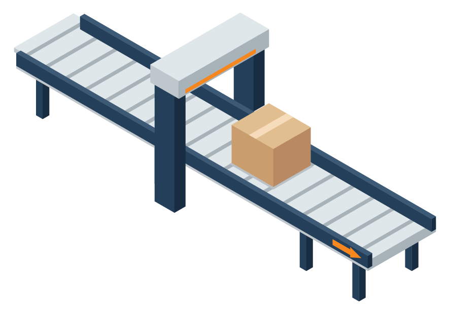

制作見本
Excel集計・店舗調査・商品CG・動画編集・Web制作の自主制作例です。
売上CSVの月別集計と明細照合
架空の売上明細10行から、重複や金額不一致を除いた5件・33,500円を集計しています。明細の日付を変更すると、最初の日付から2か月分を表示します。表示期間外の明細は件数と金額で確認できます。
Excelの合計漏れを直す
架空の伝票4件で、最後の2,400円が集計から漏れる例を再現しました。金額を変えて、修正前と修正後の数式の動きを比較できます。
店舗情報の調査・集計
丸山珈琲の長野県内4店舗を調べ、11月の営業時間と休業日をまとめた自主制作見本です。
カフェ紹介のInstagram表紙
窓辺の一人席を紹介する、架空の喫茶店の投稿見本です。写真風の画像は生成AIで制作しました。
小規模オフィスのネットワーク構成図
架空の事業所の配線を1枚にまとめました。機器名と接続線はPowerPointとdraw.ioで編集できます。
酒処 小波のB5チラシ
架空の飲食店を題材に、一人で入りたい方には夕方のセットを、料理で店を選ぶ方には車海老の塩焼きを紹介するチラシを作りました。
搬送・検査ラインの設備図
工場案内への掲載を想定した自主制作です。箱が検査ゲートを通る工程を等角投影で描き、搬送方向をオレンジの矢印で示しました。

寸法図から作る3Dデータ
Raspberry Pi Zeroの公開図面から、65 × 30 mmの基板外形と4つの取付穴をモデル化した自主制作例です。板厚は作例用に2 mmとしました。STEPを書き出した後に読み戻し、外形寸法・穴径・穴位置を照合しています。
浴室の壁付けサーモ水栓
架空の住宅設備をBlenderでモデリングしました。全景ではシャワーとカウンターの位置関係を、接写では温度と吐水の操作表示を確認できます。
ランプの商品紹介
架空のランプ「宵灯」の商品ページでは、点灯・消灯の写真を切り替え、セットごとの価格と在庫を確認できます。
終点でいいや
電車で寝過ごす場面を描いた、縦型15秒の自主制作短編。字幕、カット、色の切り替えで話を進め、音を消した状態でもオチまで追えます。
宿泊者向けのタブレット受付
架空の予約を使って、宿泊者のチェックインから管理画面への反映までを試せます。受付画面は日本語と英語を切り替えられます。